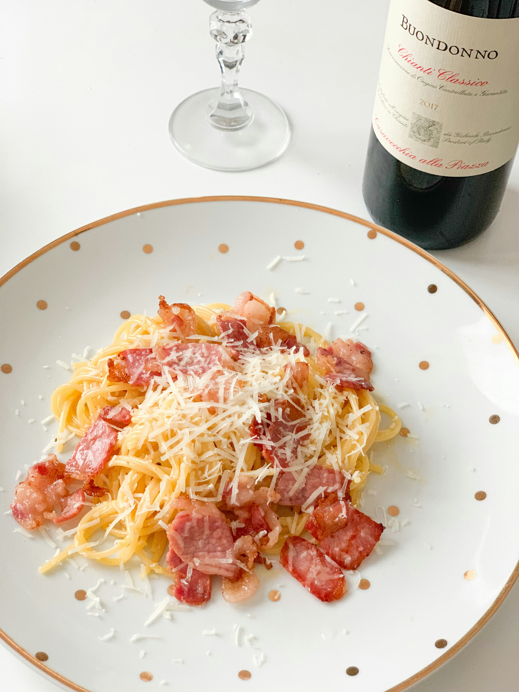

Home
Carbonara

Description
An indulgent yet simple pasta dish made with rich egg yolks and parmesan. No cream is needed to make this sauce!
Ingredients
- 6 ounces pancetta or guanciale, diced
- 12 ounces spaghetti
- 3 large egg yolks
- 1 large egg
- 1 cup grated Parmesan cheese
- Freshly ground black pepper
- Salt
Directions
- In a large skillet over medium heat, cook pancetta until crispy, about 6-8 minutes. Remove from heat and set aside.
- Bring a large pot of salted water to a boil. Cook spaghetti according to package instructions until al dente. Reserve 1 cup of pasta water, then drain the pasta.
- In a bowl, whisk together egg yolks, egg, and Parmesan cheese until well combined.
- Add the hot pasta to the skillet with pancetta (off the heat). Quickly pour in the egg mixture, tossing vigorously to coat the pasta without scrambling the eggs. Add reserved pasta water a little at a time until the sauce reaches your desired consistency.
- Season with freshly ground black pepper and additional salt if needed. Serve immediately with extra Parmesan cheese on top.